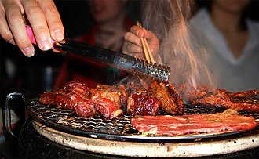

| Vietnam | Mongolia | Argentina | Mexico | Japan |
|---|---|---|---|---|
|
Phở or pho Phở or pho is a Vietnamese soup consisting of broth, rice noodles (bánh phở), herbs, and meat (usually beef) (phở bò), sometimes chicken (phở gà). Pho is a popular food in Vietnam where it is served in households, street stalls and restaurants countrywide. Pho is considered Vietnam's national dish. |

Khuushuur Khuushuur is a meat pastry or dumpling popular in Mongolia that is relatively similar to Russian and other cuisines like chiburekki or Garlic chives wrap. The meat, beef, mutton, or camel, is ground up and mixed with onion (or garlic), salt and other spices. The cook rolls the dough into circles, then places the meat inside the dough and folds the dough in half, creating a flat half-circular pocket. The cook then closes the pockets by pressing the edges together. A variety of Khuushuur has a round shape produced by pressing the dough and mince together using the dough roller. |
Escalope An escalope is a piece of boneless meat that has been thinned out using a mallet or rolling pin or beaten with the handle of a knife, or merely butterflied. The mallet breaks down the fibers in the meat, making it more tender. But the thinner meat cooks faster with more moisture loss. The meat is then coated and fried. The term escalope is also applied to potatoes that have been thinly sliced. Potatoes prepared in this manner are often called "scallops" |
Birria Birria is a Mexican dish from the state of Jalisco. The dish is a meat stew traditionally made from goat meat, but occasionally made from beef or mutton. The dish is often served at celebratory occasions, such as weddings and baptisms, and holidays, such as Christmas and Easter. Preparation techniques vary, but the dish is often served with corn tortillas, onion, cilantro and lime. The meat is marinated in an adobo made of vinegar, dried chiles, herbs, and spices before being cooked in a broth. |

Yakiniku Yakiniku , meaning "grilled meat", is a Japanese term that, in its broadest sense, refers to grilled meat cuisine. "Yakiniku" originally referred to western "barbecue" food, the term being popularized by Japanese writer Kanagaki Robun in his Seiyo Ryoritsu (i.e. "western food handbook") in 1872 (Meiji period). The term later became associated with Korean-derived cuisine during the early Shōwa period. Due to the Korean War, the terms associated with Korea in Japan were divided into North Korea (Kita Chōsen) and South Korea (Kankoku); the reference to a "yakiniku restaurant" arose as a politically correct term for restaurants of either origin. |
| Population | ||||
|
94,660,000 |

3,353,470 |

45,195,777 |

129,829,800 |

125,620,000 |